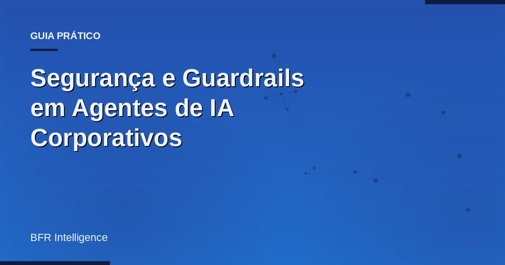

Segurança e Guardrails em Agentes de IA Corporativos
Entenda como garantir segurança e governança para agentes de IA na operação real.

Como garantir segurança em agentes de IA na operação?
Para garantir segurança em agentes de IA na operação, é fundamental implementar guardrails, definir permissões claras e monitorar o desempenho continuamente. Além disso, a integração com sistemas internos e a auditoria são cruciais para manter a governança e medir o ROI.
Em resumo
- Segurança em agentes de IA requer guardrails eficazes.
- Integração com sistemas internos é essencial.
- Monitoramento contínuo assegura resultados mensuráveis.
A Importância da Segurança em Agentes de IA
A segurança é um aspecto crítico na implementação de agentes de IA. Sem guardrails adequados, os agentes podem gerar resultados inesperados e prejudiciais. A governança deve ser uma prioridade, assegurando que a operação esteja alinhada com as políticas da empresa e com as regulamentações do setor.
Elementos Essenciais para Segurança
- Definição clara de permissões para acesso e uso.
- Implementação de guardrails para evitar desvios.
- Auditorias regulares para monitorar a conformidade.
- Integração com ferramentas de segurança existentes.
- Treinamento contínuo para equipes envolvidas.
Atenção
Já estruturamos isso em diversos clientes e vale uma conversa. Entender seu cenário específico pode ajudar a definir as melhores práticas de segurança.
Integrando Segurança e Governança
Para garantir que os agentes de IA operem de maneira segura, é importante integrá-los aos sistemas internos da empresa. Isso não só melhora a eficiência, mas também permite a aplicação de guardrails que protegem contra riscos. Segundo a Microsoft, a governança deve ser uma parte integrante da estratégia de adoção de IA, garantindo que agentes operem dentro dos parâmetros definidos ([Cloud Adoption Framework](https://learn.microsoft.com/pt-br/azure/cloud-adoption-framework/ai-agents/governance-security-across-organization)).
Quer tirar a IA do piloto e colocar na operação?
Vamos discutir como integrar segurança em seus agentes.
Criar meu agenteEvitar Armadilhas Comuns
É crucial evitar a implementação de agentes de IA sem a devida segurança. Muitos projetos falham por não considerar a governança desde o início. Guardrails e auditorias são indispensáveis para mitigar riscos. É preciso garantir que todos os dados tratados pelos agentes estejam protegidos e que a operação não saia do controle, como apontado em análises recentes sobre segurança de IA ([Segurança de Agentes de IA](https://aiworkreview.com/seguranca-agentes-ia-guardrails-governanca-empresas)).
Perguntas frequentes
Quais são os principais riscos de segurança em agentes de IA?
Os principais riscos incluem acessos não autorizados, desvios de operações e falhas na conformidade com regulamentos. Guardrails ajudam a mitigar esses riscos.
Como medir o ROI de agentes de IA na operação?
O ROI pode ser medido através da análise de eficiência operacional, redução de custos e aumento na satisfação do cliente. Relatórios periódicos são essenciais.
Quais são os melhores guardrails para implementar?
Os melhores guardrails incluem controle de acesso, monitoramento de desempenho e auditorias regulares para garantir conformidade e segurança.